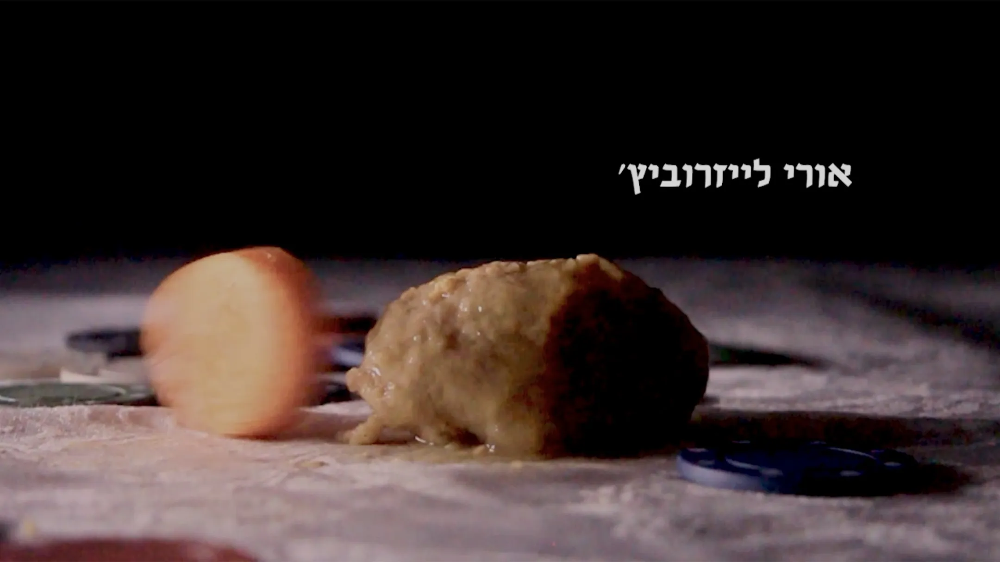

hamotzi
Video art
direction & filming
student project
2024
A title sequence for a fictional TV series. Drawing the viewer into an ultra religious world of crime showcasing complexity of a layered world.
The titles explore where faith and crime meet, comparing the two worlds through shared gestures, objects, and rituals until the line between them blurs.
student project with yuval israel